铸造
工程材料与机械制造基础（第3版）
铸造概述
铸造概述
铸造的定义与特点
- 铸造：将熔融金属浇注/压射/吸入铸型，冷却凝固获得零件或毛坯
- 优点：一次成形、适应性强、成本低、适合复杂内腔
- 不足：晶粒粗大、缩孔/缩松/气孔等缺陷、力学性能不如锻件
- 现代铸造：集成计算机凝固模拟、自动控制、机器人等先进技术
液态金属成形理论基础
液态金属成形理论基础
合金的流动性
- 流动性：液态合金填充铸型的能力
- 流动性好 → 成形复杂薄壁件、利于排气和补缩
- 流动性差 → 冷隔、浇不足、气孔、夹渣、缩孔
- 测量：螺旋形试样，越长流动性越好

液态金属成形理论基础
影响流动性的因素—合金成分
- 纯金属和共晶成分：恒温凝固→界面光滑→流动性最好
- 宽凝固范围合金：树枝晶阻碍流动→流动性差
- 铁碳合金中：共晶成分铸铁流动性最好
- 应尽量选共晶或近共晶成分合金

图：铁碳合金的流动性与其碳的质量分数的关系

液态金属成形理论基础
影响流动性的因素—物理性质与温度
- 比热容和密度越大、导热系数越小 → 流动性越好
- 黏度越小 → 流动性越好
- 温度升高 → 流动性上升，但过高→氧化吸气严重
- 浇注温度必须合理，铸铁件'高温出炉、低温浇注'
液态金属成形理论基础
液态合金的充型能力
- 充型能力 = 合金流动性 + 工艺因素
- 铸型条件：蓄热能力、排气、温度、结构复杂度
- 浇注条件：系统结构（阻力）、静压力、浇注温度
- 流动性差的合金可通过改善工艺条件提高充型能力
液态金属成形理论基础
铸造合金的收缩
- 收缩：合金从液态冷却至室温体积缩小的现象
- 三阶段：液态收缩 → 凝固收缩 → 固态收缩
- 液态收缩+凝固收缩 → 缩孔和缩松
- 固态收缩 → 内应力、变形和裂纹
- 灰铸铁体收缩率约7%，铸钢约12%

液态金属成形理论基础
缩孔与缩松的形成
- 缩孔：集中孔洞，近倒锥形，内表面不光滑
- 缩松：细小分散孔洞，多分布于轴线区域和厚大断面
- 纯金属/共晶→逐层凝固→缩孔（集中易修补）
- 宽凝固范围→同时凝固→缩松（分散危害大）
- 缩孔+缩松总容积一定，增大冷速可促缩松→缩孔转化

图：冒口补缩示意图

液态金属成形理论基础
防止缩孔的方法
- 顺序凝固原则：远离冒口先凝→冒口最后凝
- 设置冒口和冷铁，控制凝固方向
- 缩孔转移到冒口中，切除冒口即可获完好铸件
- 计算机凝固模拟可准确预测缩孔位置
- 方法：等温线法、内切圆法、计算机模拟法
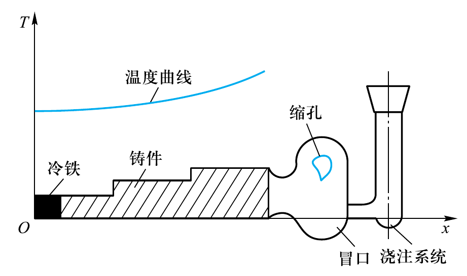
图：铸造热应力与变形

液态金属成形理论基础
铸造内应力
- 热应力：壁厚不均→冷却速度不同→收缩量不同
- 机械应力：收缩受铸型、型芯的机械阻碍
- 厚壁/心部受拉伸，薄壁/表层受压缩
- 固态收缩率越大、壁厚差别越大→热应力越大
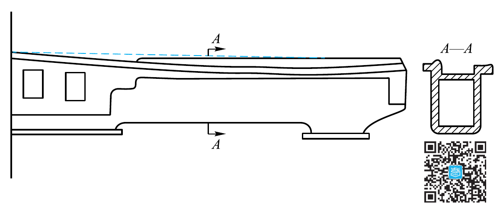
液态金属成形理论基础
铸件的变形与裂纹
- 内应力→铸件变形减缓应力（厚拉薄压）
- 防变形：同时凝固、反变形法、去应力退火
- 热裂：凝固后期高温沿晶界断裂，短而曲折
- 冷裂：低温直线状，出现在受拉伸部位
- 防热裂：改善退让性、限硫；防冷裂：降应力、控磷

图：砂型铸造的生产过程
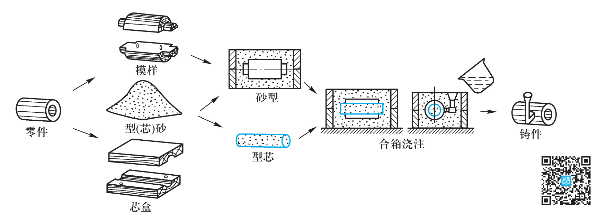
砂型铸造
砂型铸造
砂型铸造生产过程
- 工艺流程：零件图→铸件图→模样→造型→合箱→浇注→落砂→清理→检验
- 优点：适应性极强、成本低、各种合金均可铸造
- 缺点：一型一次、每吨铸件需4~5吨型砂、粉尘污染

图：机器辅助起模方法

砂型铸造
造型方法
- 手工造型：整模、分模、挖砂、活块、三箱、刮板、假箱、地坑
- 机器造型：振压紧实、抛砂紧实、射砂紧实
- 起模方法：顶箱（浅腔）、漏模（深腔）、翻转（复杂腔）
- 浇注原则：'高温出炉、低温浇注'

砂型铸造
浇注位置的选择
- 重要的加工面和主要加工面 → 放在下面
- 需补缩的厚壁部分 → 放在上部或侧面（便于放冒口）
- 大面积薄壁部分 → 放在下部，立放或倾斜浇注
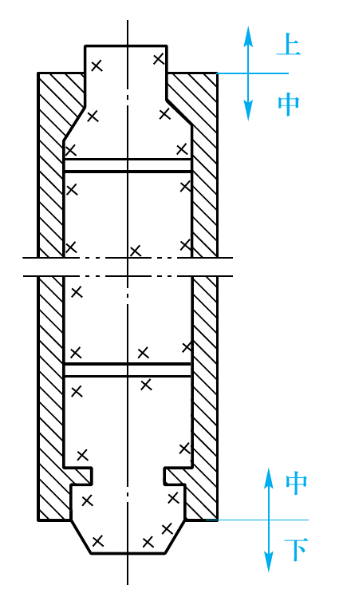
图：箱盖的浇注位置
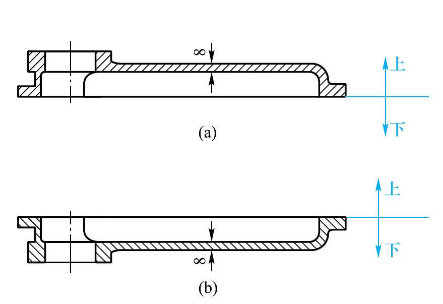
图：平板铸件的浇注位置
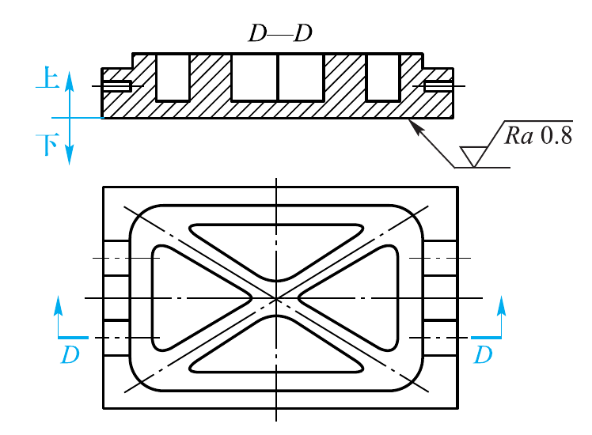
砂型铸造
分型面的选择
- 原则①：选在铸件最大截面上，取模顺利
- 原则②：尽量减少分型面数量，最好一个分型面
- 原则③：减少活块和型芯数量，简化工艺
- 铸件大部分放在同一个砂箱内→重要加工面在下型

图：用型芯减少绳轮铸件分型面
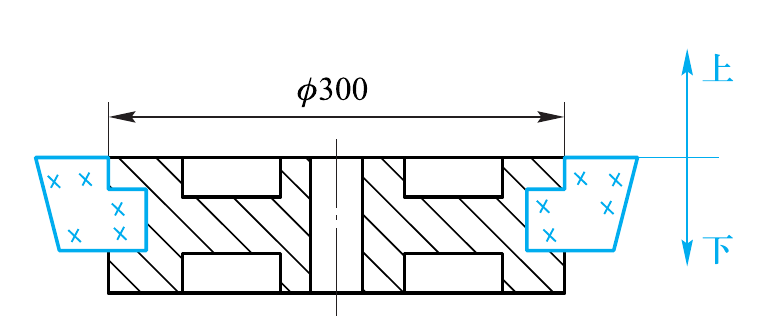
图：管子堵头铸件分型面的选择
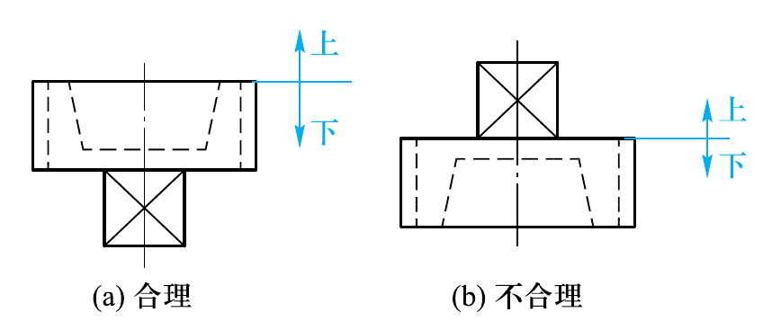
砂型铸造
主要工艺参数
- 铸造收缩率：灰铸铁0.7%~1.0%，铸钢1.5%~2.0%
- 机械加工余量：铸铁件3~15mm
- 起模斜度：15'~3°（垂直于分型面的加工表面）
- 铸造圆角：避免尖角处应力集中，内圆角≈壁厚1/2
- 芯头：定位和固定型芯；最小铸出孔12~50mm
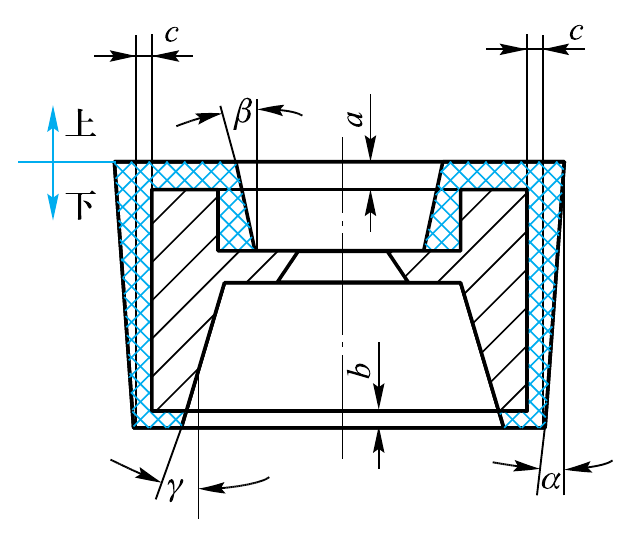
图：铸造圆角
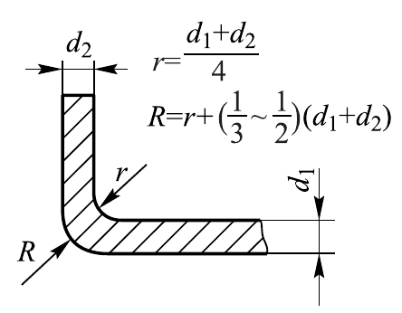
图：芯头
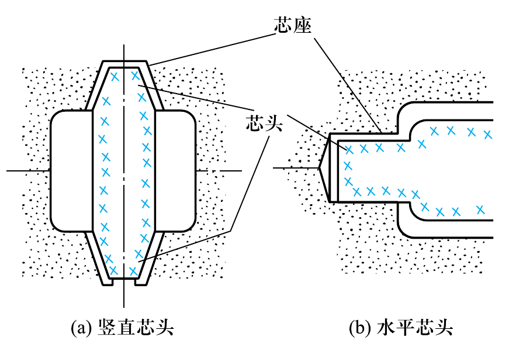
图：支座的铸造工艺图
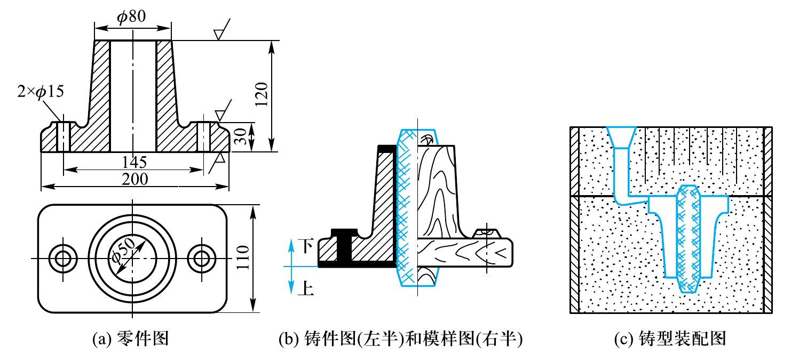
砂型铸造
铸造工艺图实例
- 铸造工艺图是指导模样设计、生产准备和铸件检验的技术文件
- 内容包括：浇注位置、分型面、加工余量、收缩率、芯头等
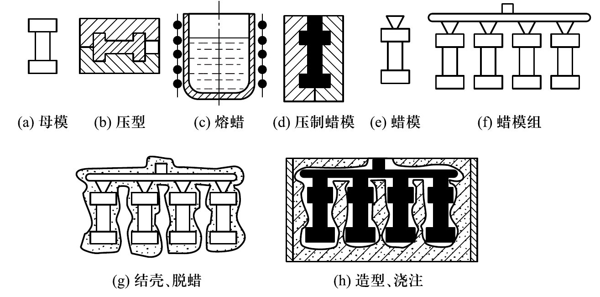
特种铸造
特种铸造
熔模铸造（精密铸造）
- 工艺：压制蜡模→结壳(3~7次)→脱蜡→焙烧(850~950°C)→浇注
- 精度IT14~IT11，Ra 1.6~12.5μm，最小孔径0.5mm
- 适用：涡轮叶片、高速钢刀具等复杂精密小件

特种铸造
金属型铸造
- 金属型可反复使用（一型多铸）
- 措施：预热、加强排气、喷刷涂料、尽早开型
- 铸件力学性能好，铝合金抗拉强度提高约20%
- 适用：大批量非铁金属件（铝活塞、气缸体、铜轴瓦）

特种铸造
压力铸造
- 两大特点：高压 + 高速充型
- 精度IT13~IT11，Ra 0.8~3.2μm，最小壁厚0.5mm
- 效率最高，班产600~700件
- 不足：设备投资大、卷气→有气孔→不能热处理

特种铸造
离心铸造
- 原理：高速旋转，离心力充型成形
- 立式（绕竖直轴）和卧式（绕水平轴）两类
- 优点：省型芯和浇冒口、组织致密
- 可铸双金属件；内表面质量差是主要缺点

特种铸造
反压铸造与挤压铸造
- 反压铸造（压差）：充型平稳，最小壁厚0.5mm
- 增压法：坩埚加压高于型腔→金属液沿升液管充型
- 挤压铸造（液态模锻）：机械压力下凝固成形
- 挤压铸造：无浇注系统、组织致密、接近锻件性能

图：实型铸造的工艺过程
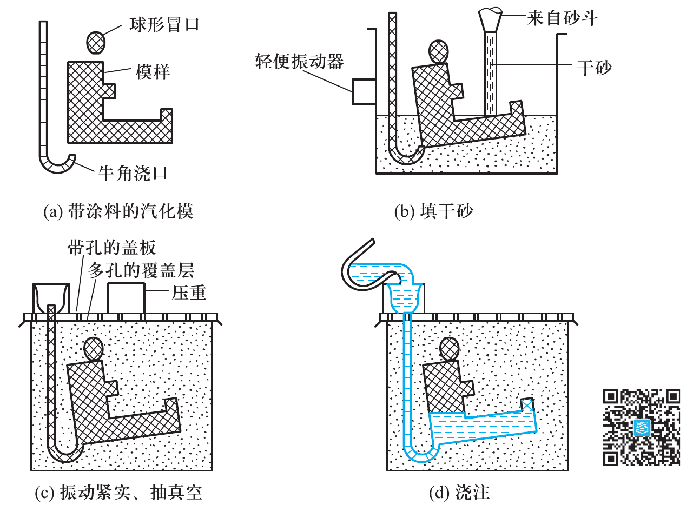
特种铸造
实型铸造与磁型铸造
- 实型（消失模）：泡沫塑料模→填砂振实→浇注汽化→获铸件
- 实型优点：无分型面、不用型芯、模样成本低
- 磁型：磁丸+通电固结→浇注→断电松散→取出铸件
- 磁型特点：无黏结剂、冷却快3倍、组织细密

图：气冲造型的工艺过程
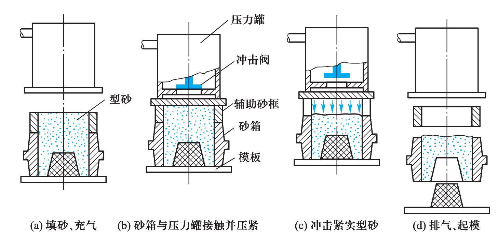
特种铸造
气冲造型
- 原理：压缩空气/燃气冲击波紧实型砂
- 紧实时间<0.1s，一个铸型约0.5s
- 紧实度高且均匀，精度高，无振击噪声

常用合金铸件生产
常用合金铸件生产
灰铸铁件
- 冲天炉熔炼：铸造生铁+回炉铁+废钢+铁合金+焦炭+熔剂
- 铸造性能优良，一般不需冒口和冷铁
- 孕育处理：浇注前加硅铁0.25%~0.6%→石墨细化、基体致密
- 要求低碳低硅铁液+高出炉温度(1450~1470°C)

常用合金铸件生产
球墨铸铁件
- 化学成份：高碳(C=3.6~4.0%)、高硅、低硫(S<0.06%)
- 球化处理：稀土镁合金球化剂，冲入法加入
- 孕育处理：硅铁0.4%~1.0%
- 常设冒口和冷铁，控制型砂水分防皮下气孔
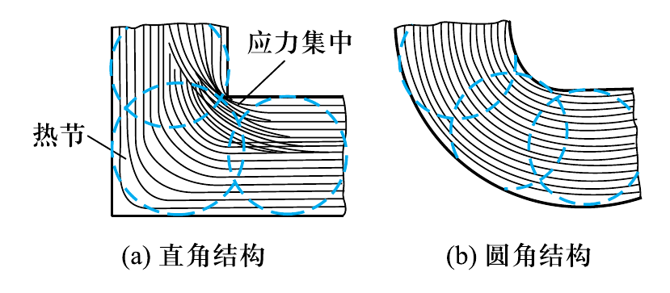
常用合金铸件生产
可锻铸铁与蠕墨铸铁
- 可锻铸铁：白口毛坯+900~950°C石墨化退火→团絮状石墨
- 可锻铸铁流动性差，需注意冒口和冷铁
- 蠕墨铸铁：铸造性能与灰铸铁相近，流动性更好
- 蠕墨铸铁一般铸态使用，不热处理
常用合金铸件生产
铸钢件生产
- 综合力学性能优于铸铁：强度高、塑性韧性好、焊接性好
- 工艺特点：熔点高(~1500°C)、流动性差、收缩率大(~2%)
- 型砂要求：高透气性、耐火度、强度和退让性
- 熔炼：三相电弧炉（最普遍）或感应电炉
- 应用：高压阀门、轧钢机机架、坦克履带(ZGMn13)
铸件结构设计
铸件结构设计
壁厚设计原则
- 壁厚应适当：大于合金最小壁厚（防浇不足），不宜过大（防缩松）
- 可用T形、工字形、槽形截面或加强筋保证强度刚度
- 壁厚应均匀：减小厚壁差→防热节、缩孔、变形
- 内壁冷却慢应薄，外壁冷却快应厚

图：铸件壁之间的连接
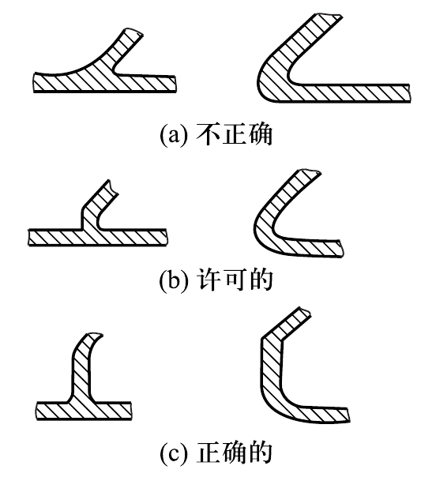
铸件结构设计
壁连接与铸造圆角
- 壁连接应合理：结构圆角避免直角→防金属聚集和缩孔
- 过渡连接：避免锐角和交叉连接
- 小型件交错连接，大型件环状连接
- 不等厚壁间用圆角/倾斜/复合过渡
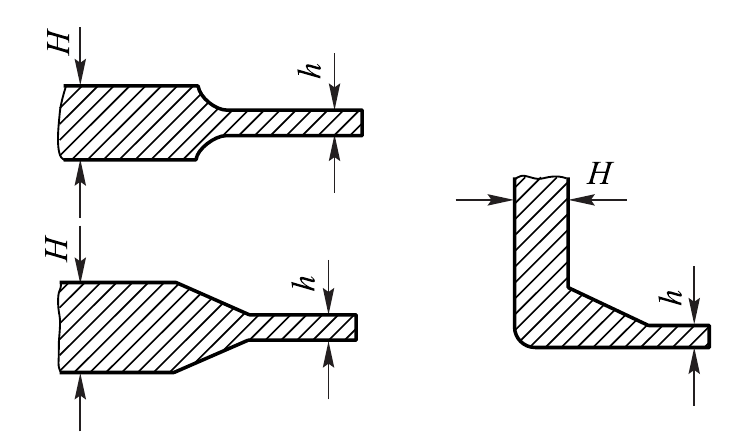
图：防止变形的铸件结构
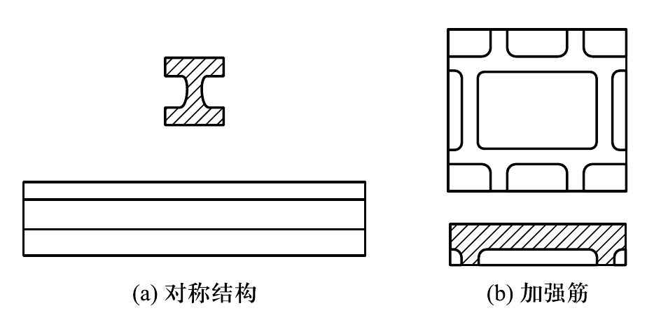
图：轮辐的设计

铸件结构设计
减少变形与减缓收缩受阻
- 细长件和大平板件→对称结构或加强筋
- 弯曲轮辐或奇数轮辐→冷却时可自由收缩
- 减缓收缩受阻是降低铸造内应力的关键
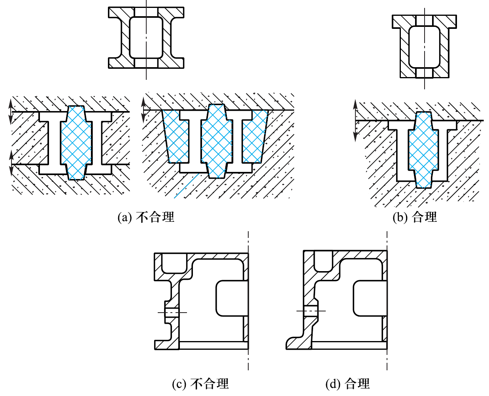
图：凸台设计应避免活块造型

铸件结构设计
外形与内腔设计
- 外形尽量简单，避免侧凹→便于起模
- 分型面平直，凸台和筋条应便于起模
- 内腔：减少型芯数量、简化型芯形状
- 以砂垛代替型芯，开式结构省去型芯
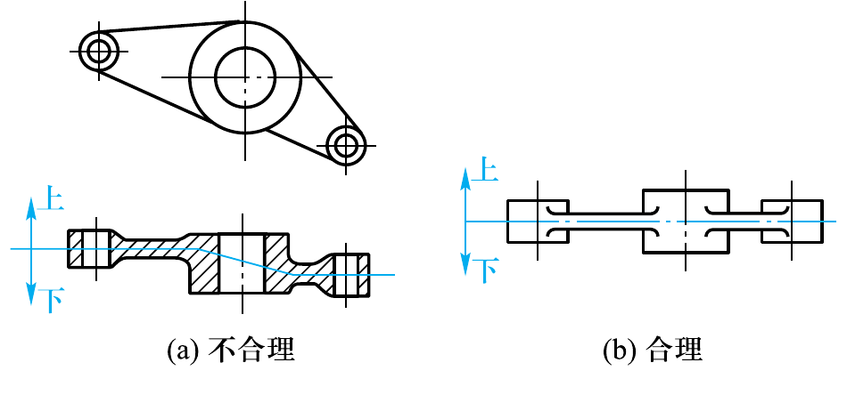
图：以砂垛代替型芯
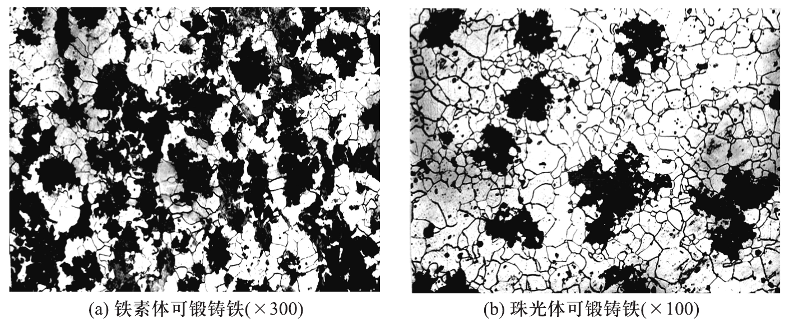
图：采用开式结构省去型芯
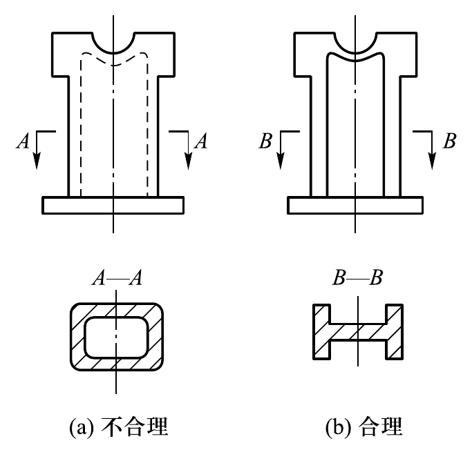
图：轴承支架
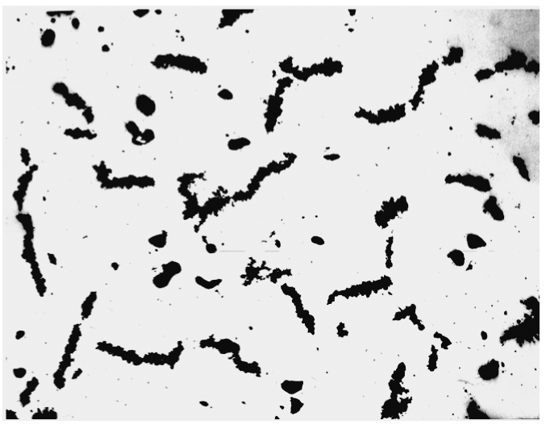
铸件结构设计
结构斜度
- 垂直于分型面的不加工表面应设计结构斜度
- 优点：起模方便、零件更美观
- 有斜度的内腔可用砂垛代替型芯
- 高度越低，结构斜度应越大
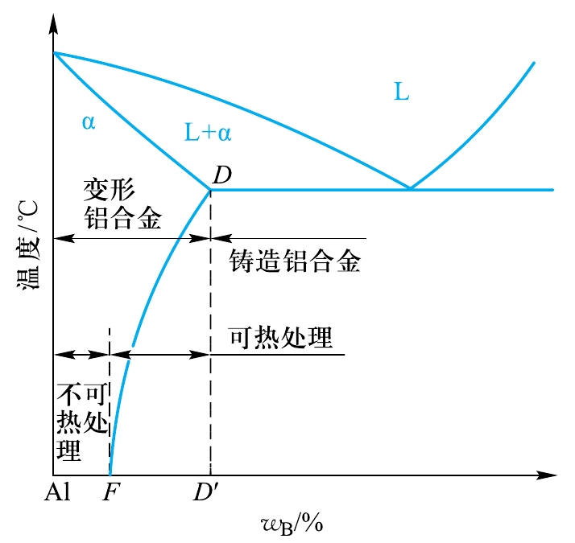